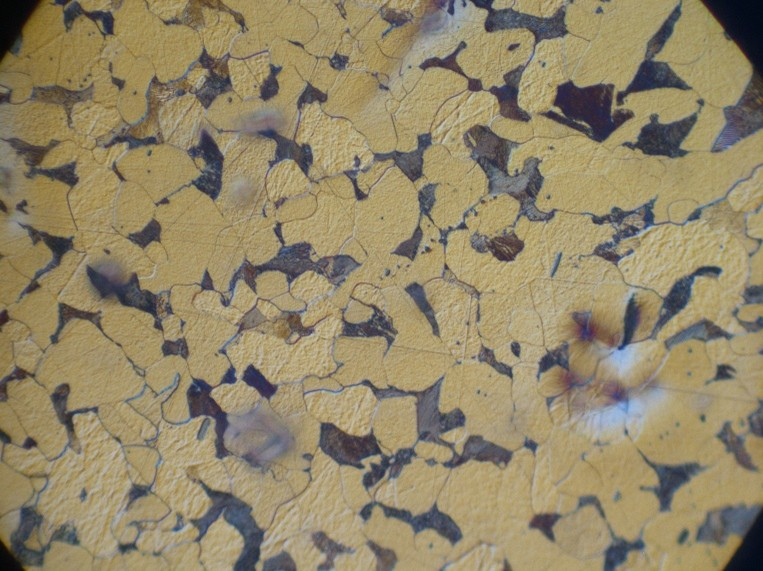
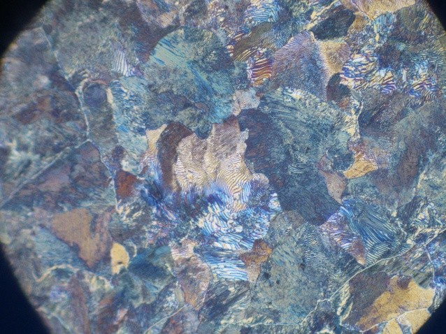

Grain Structures

If we had a material where the entire structure consisted of a single crystal structure — that is, if the whole material was one large crystal — then we would have what is called a single crystal. In such a case, the crystal structure would be continuous throughout the entire material.
However, this is mostly a theoretical rarity. There are some materials in nature that are single crystals, but it takes very specific conditions for a material to consist of only one crystal. There are, as mentioned, a few such cases. In the image, you can see a substance called pyrite, which is a compound of iron and sulfur. If the entire material were a single crystal, it would appear — on a macroscopic level — like the image, forming similar distinct shapes. But that’s not common, and for most metals, we do not find such single-crystal structures. If we did have such single crystals and measured material properties — for example, strength — the results would vary depending on the direction in which the measurement was taken. In a tensile test, for instance, it would matter whether the material was stretched in a specific direction; we would get one result, but if we measured along the diagonal, we might get something different. This is because the atomic density in a crystal is not the same in all directions. When a material has different properties in different directions, we say it is anisotropic. An isotropic material has the same properties in all directions — meaning there is no variation regardless of how you look at or measure it. But as mentioned, most metals and materials are not single crystals like the one shown here. Instead, they consist of a large number of small crystals with completely random orientations. We call this polycrystalline. Poly means many — so polycrystalline means that the material is made up of many small crystals. In metals, we refer to these small crystals as grains. This has to do with how the metal solidified — something we’ll look at more closely. But most metals that have formed, or that exist in solid form under normal conditions, will consist of a large number of tiny crystals, all with random orientations. It’s natural for this type of structure to form when a melt solidifies. The structure formed by all these small crystals is called a grain structure. Grain structure exists at a scale above the crystal structure. The crystal structure, which we talked about previously, is found inside each individual grain or crystal. But the structure made up of all the crystals together is what we call the grain structure. And in a polycrystalline material — where we have many such small individual crystals or grains — the material will usually exhibit isotropic properties, meaning it has the same properties regardless of the direction in which you measure. This is because all the grains are randomly oriented. When moving from one crystal to the next, their orientations may differ — for example, the atomic rows might run one way in one crystal and a different way in another. Let's take a closer look at how such a grain structure forms. In metals, the atoms are arranged in a three-dimensional pattern called a crystal structure — that is, the pattern formed by atoms within a single crystal. But what we’re focusing on now is the structure formed by many such crystals, which is called a grain structure. "Grain" and "crystal" are essentially two words describing the same thing. A small section of a grain structure might typically look like this: The circles represent atoms arranged in a specific crystal structure. However, in this example, we have three different grains. Even though each grain has the same internal crystal structure, their orientations are different. On the right, you can see a microscopic image of a grain structure. These grains are usually on the scale of micrometers. Within each grain, the atoms are arranged in a specific way — just like in a crystal structure. But how does this structure actually form? Most metals are polycrystalline, meaning they are made up of a large number of individual crystals. These grains form when a metal solidifies. As we cool down a molten metal, it begins to solidify. And as it solidifies, these grains begin to grow...
We roughly divide grain structures into three different types:Imperfections
Now let’s take a look at imperfections in metals: These can include impurities, defects, or anything else that prevents the material from having one large, perfect crystal structure. The different types of defects commonly found in metals include: When working with metal alloys, it's possible to calculate the percentage composition of the metals — in other words, how much of each metal is present in the alloy.
You can express the composition in one of two ways:
1. Weight percent (wt%) – This shows how much of the total mass is made up of each metal.
It's a straightforward percentage calculation:
If you know the atomic masses, you take the mass of one metal, divide it by the total mass of the alloy, and multiply by 100 to get the weight percent.
2. Atomic percent (at%) – This reflects the ratio of atoms of each element, rather than mass.
Instead of using mass in grams, you calculate the number of moles of each metal.
To find the number of moles, divide the mass of each metal by its molar mass (which you can find in the periodic table).
A simple way to check if your calculations are correct is to verify that the total adds up to 100%, since you're working with percentages
When working with metal alloys, it's possible to calculate the percentage composition of the metals — in other words, how much of each metal is present in the alloy.
You can express the composition in one of two ways:
1. Weight percent (wt%) – This shows how much of the total mass is made up of each metal.
It's a straightforward percentage calculation:
If you know the atomic masses, you take the mass of one metal, divide it by the total mass of the alloy, and multiply by 100 to get the weight percent.
2. Atomic percent (at%) – This reflects the ratio of atoms of each element, rather than mass.
Instead of using mass in grams, you calculate the number of moles of each metal.
To find the number of moles, divide the mass of each metal by its molar mass (which you can find in the periodic table).
A simple way to check if your calculations are correct is to verify that the total adds up to 100%, since you're working with percentages
 Let’s look at a concrete example of how to calculate atomic percent.
Suppose we know the weight percent (wt%) of the metals in an alloy.
Let’s look at a concrete example of how to calculate atomic percent.
Suppose we know the weight percent (wt%) of the metals in an alloy.
 An alloy contains 97 wt% aluminum and 3 wt% copper (Cu).
We want to find the composition in atomic percent.
The formula shown (in the original reference) indicates the following:
An alloy contains 97 wt% aluminum and 3 wt% copper (Cu).
We want to find the composition in atomic percent.
The formula shown (in the original reference) indicates the following:
 Since the total must be 100%, we simply subtract to get the atomic percent of copper:
Atomic percent of copper = 100% – 98.7% = 1.3%
So, in this alloy, 97% of the total mass is aluminum, but 98.7% of the atoms are aluminum atoms.
This happens because aluminum has a lower atomic mass, so more aluminum atoms are needed to make up the same mass compared to copper. Therefore, the atomic percent of aluminum is higher than its weight percent.
Vacancies are always present to some extent in the structure of a metal.
A vacancy is a site where an atom is missing from the crystal lattice.
The number of such vacancies varies with the temperature of the metal.
Since the total must be 100%, we simply subtract to get the atomic percent of copper:
Atomic percent of copper = 100% – 98.7% = 1.3%
So, in this alloy, 97% of the total mass is aluminum, but 98.7% of the atoms are aluminum atoms.
This happens because aluminum has a lower atomic mass, so more aluminum atoms are needed to make up the same mass compared to copper. Therefore, the atomic percent of aluminum is higher than its weight percent.
Vacancies are always present to some extent in the structure of a metal.
A vacancy is a site where an atom is missing from the crystal lattice.
The number of such vacancies varies with the temperature of the metal.